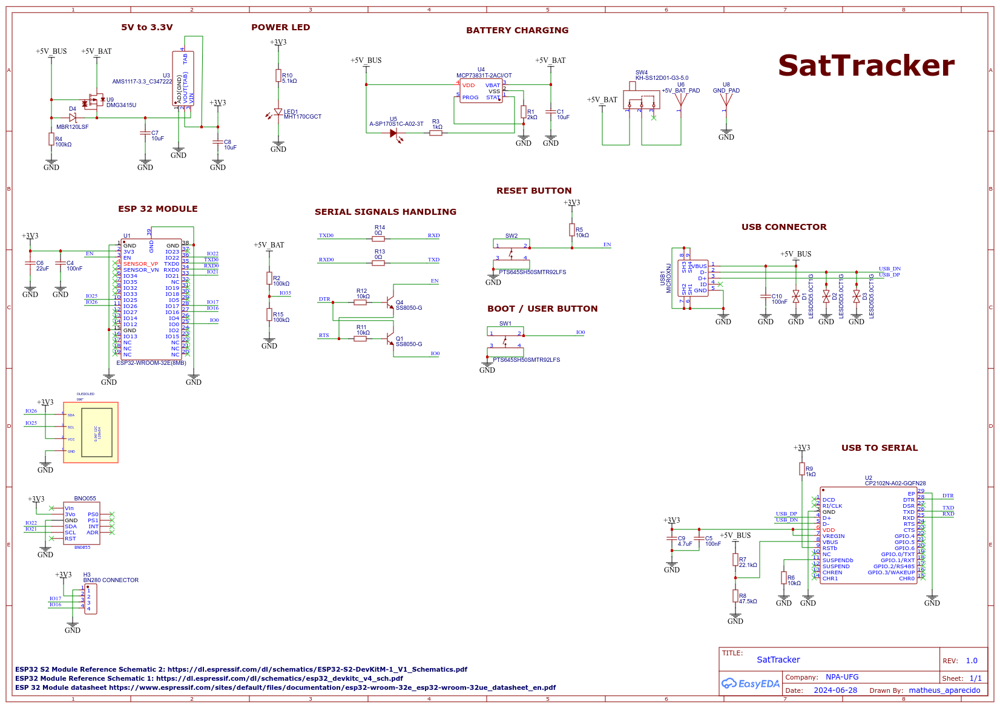

SATTRACKER-STANDALONE
DATA: 2024-11-30 | LINGUAGEM: C | PLATAFORMA: ESP32

Rastreador de satélites baseado no ESP32 que permite selecionar um satélite de uma lista predefinida
e visualizar informações de posicionamento em tempo real em um display OLED. Usa dados de GPS para calcular a
posição atual do satélite selecionado e prever horários de passagem.
Funcionalidades
- Seleção de Satélites: Navegue por uma lista e selecione qual rastrear
- Informações em Tempo Real: Hora atual, nome do satélite, azimute, elevação e previsão da
próxima passagem
- Interface Interativa: Botões para navegação no menu
- Display OLED: Informações claras e legíveis
Hardware Necessário
- ESP32 Dev Kit: Processamento principal
- Módulo GPS: NEO-6M para localização e tempo
- Display OLED: SSD1306 128x32 pixels
- Botões de Navegação:
- "Next" - GPIO 25
- "Previous" - GPIO 26
- "Select" - GPIO 27
Esquemático

Bibliotecas Utilizadas
- TinyGPSPlus: Processamento de dados GPS
- Sgp4: Cálculos de órbita
- Ticker: Temporização periódica
- Adafruit GFX + SSD1306: Driver do display OLED
Satélites Incluídos
- NOAA 18
- NOAA 19
- NOAA 15
- METEOR M2-3
- METEOR M2-4
- METEOR M2-2
- ISS (ZARYA)
- GOES 17
- GOES 16
Como Usar
- Ligue o dispositivo - o menu de seleção aparece
- Use "Next/Previous" para navegar pelos satélites
- Pressione "Select" para confirmar
- Visualize azimute, elevação e próxima passagem
- Pressione "Select" novamente para voltar ao menu
[ > ACESSAR CÓDIGO FONTE NO GITHUB ]